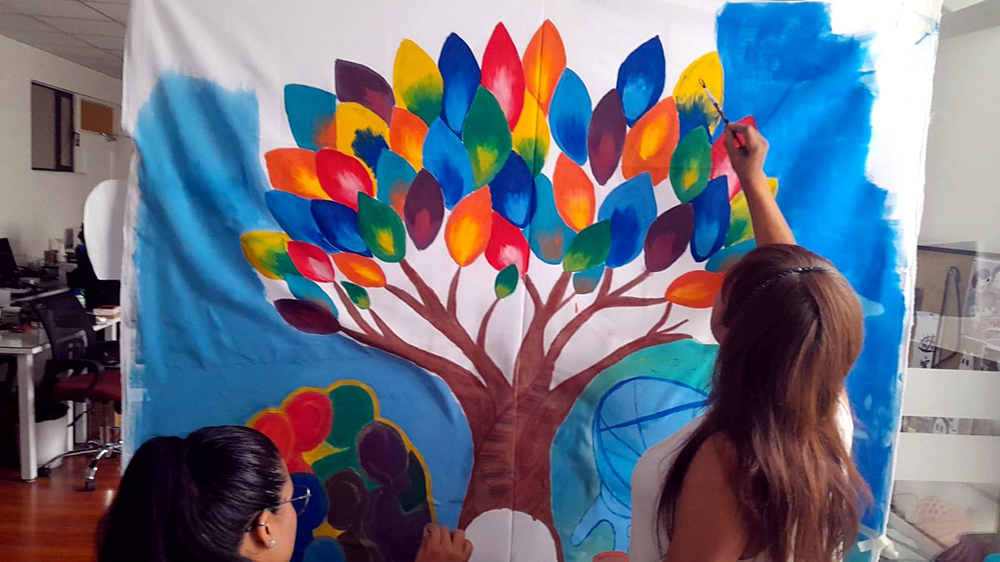
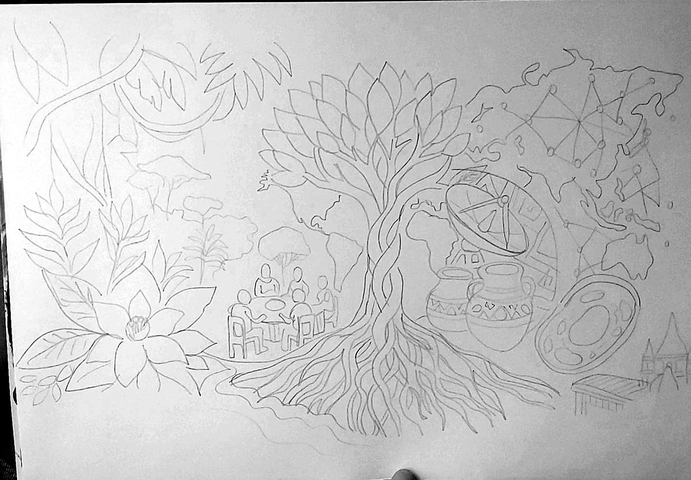
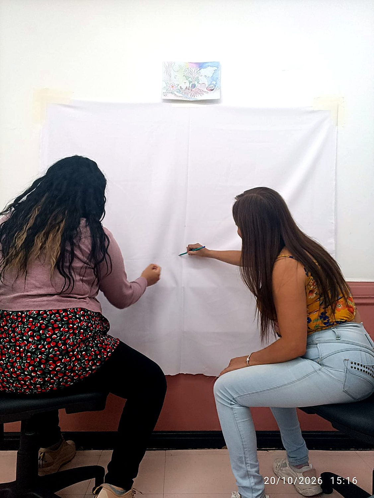
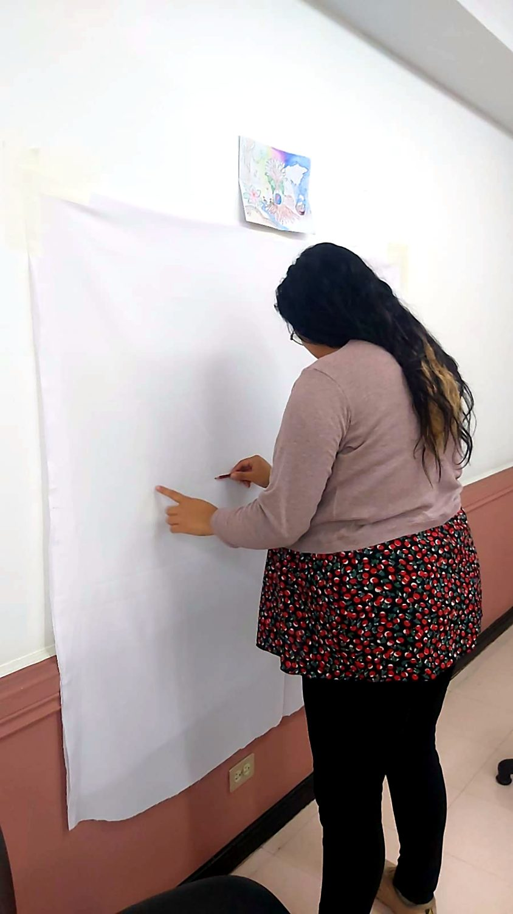
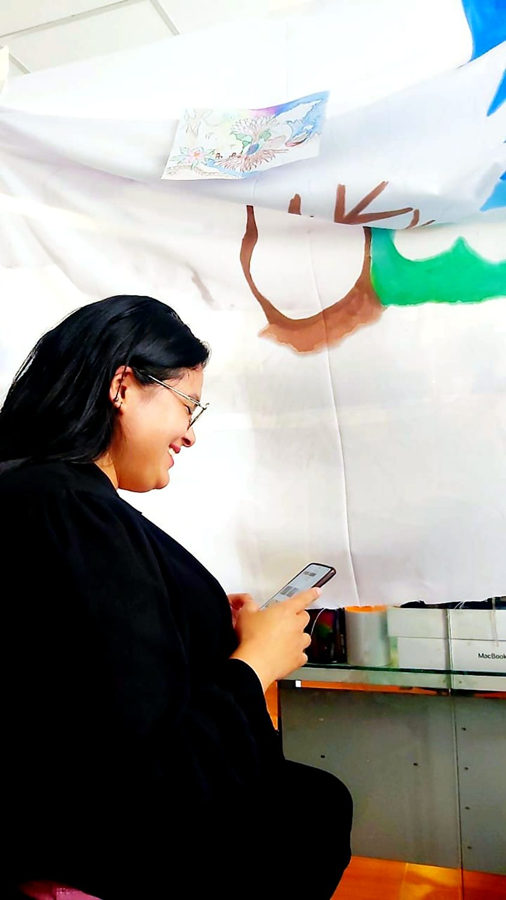
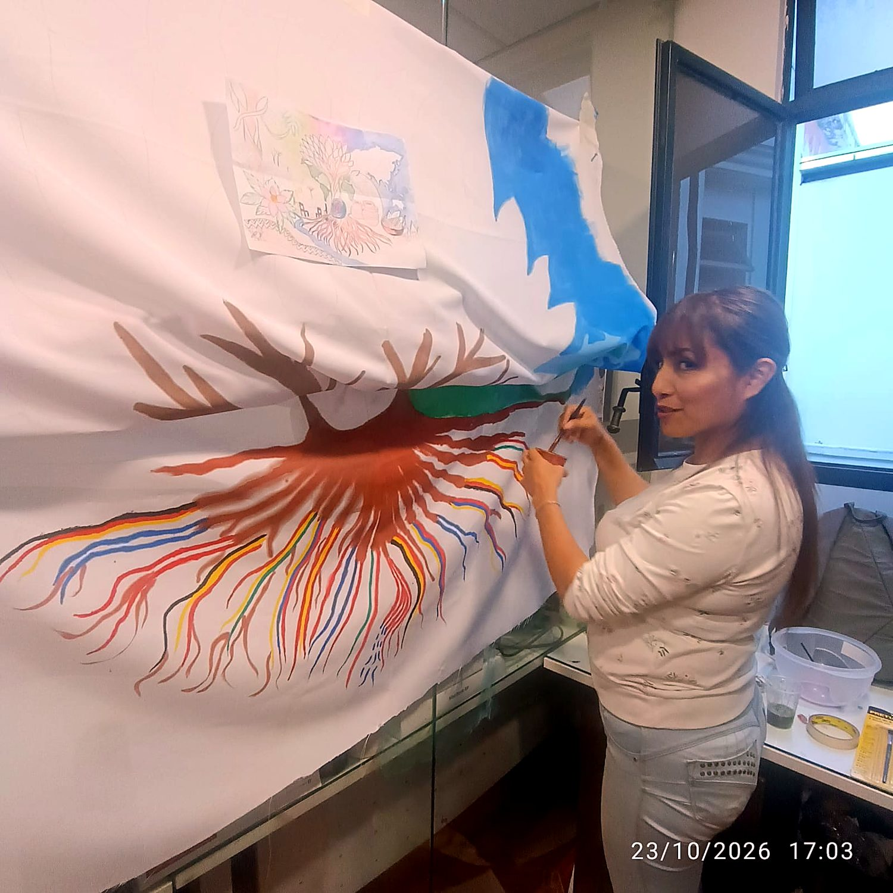
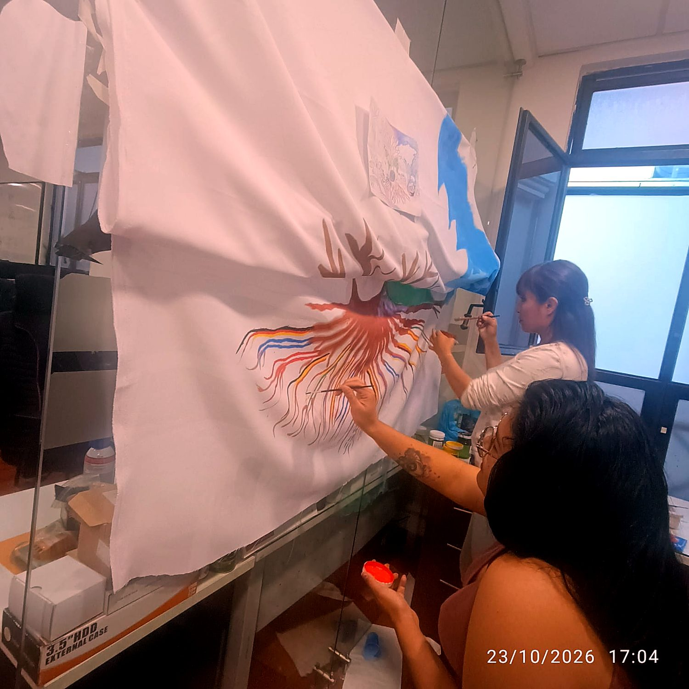
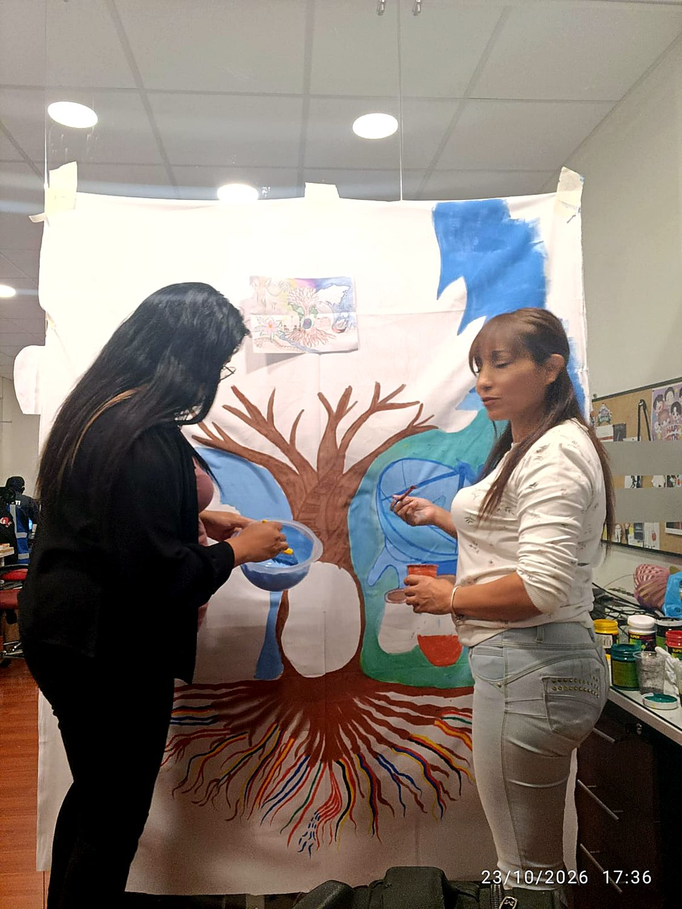
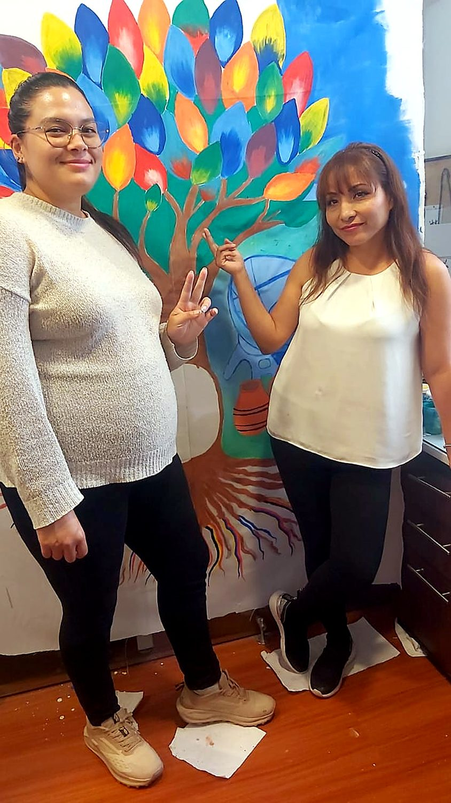

Mil raíces, una sola copa
La multiculturalidad en la Universidad San Francisco de Quito, pintada sobre tela.
Maribel Amaguaña y Andrea Giller · Departamento de TICs

Memoria explicativa
Técnica: pintura sobre tela blanca facilitada por la universidad.
Concepto general
La Universidad San Francisco de Quito es un lugar donde conviven estudiantes, docentes y familias de distintas regiones, pueblos y países. Este mural responde a la pregunta: ¿cómo se vive la multiculturalidad en la USFQ? Nuestra respuesta es que se vive como un organismo vivo: tiene raíces que vienen de muchos lugares, un tronco que sostiene lo que compartimos y una copa en la que cada identidad aporta su propio color.
Lectura de la obra
- El árbol de la vida (centro)Es el eje de la composición. Sus hojas, de colores múltiples y degradados, representan a las personas que forman la comunidad universitaria: ninguna se repite y todas crecen del mismo tronco. El árbol es también un símbolo ancestral presente en muchas culturas del mundo.
- Las raíces-bandera (base)Cada raíz está pintada con los colores de la bandera de un país. No están todos los países, pero sí los más representativos de nuestra comunidad. Las raíces nos recuerdan que toda identidad tiene un origen y que, bajo la tierra, esas raíces se entrelazan y se alimentan mutuamente.
- La célula (base del tronco)En el punto donde el árbol nace se encuentra una célula, símbolo de lo que nos une como especie. Más allá de la lengua, el origen o la tradición, todos los seres humanos compartimos la misma unidad de vida. La diversidad cultural florece sobre una identidad biológica común.
- Los siete continentes abrazados (izquierda)Siete figuras humanas, cada una con el color de un continente, se funden en un abrazo. Representan el encuentro, el respeto y el sentido de pertenencia que buscamos en el campus: la diferencia no separa, acerca.
- Las vasijas de barro y el plato de maíces (derecha)Junto a la antena se encuentran dos vasijas de barro con bandas decorativas y un plato cóncavo que contiene maíz negro, maíz blanco y otros granos. Estos elementos evocan la cultura material, la memoria ancestral y la tierra que alimenta. Son la raíz andina de nuestro territorio, desde la cual la USFQ dialoga con el mundo.
- La antena y la red global (derecha)La antena de transmisión y los puntos de conexión sobre los continentes simbolizan la tecnología como puente entre culturas. Desde el departamento de TICs entendemos que la conectividad permite que una universidad en Ecuador colabore, comparta conocimiento y se encuentre con el mundo.
- El libro (conocimiento)Un libro abierto a los pies del árbol, junto a la célula, representa la misión académica de la universidad. Es el espacio donde las culturas se encuentran para aprender unas de otras.
- El colibrí (copa del árbol)Un colibrí corona la parte superior del árbol, entre las hojas más altas. Polinizador y viajero incansable, simboliza la libertad, la ligereza y el intercambio que lleva vida de una flor a otra, como lo hacen las ideas entre personas de distintos orígenes.
- Galápagos y AmazoníaEl piquero de patas azules, ave emblemática de Galápagos, representa a las islas Galápagos, laboratorio natural de la evolución, y la orquídea representa la selva amazónica, una de las regiones más biodiversas del planeta. Ambos recuerdan el compromiso de la USFQ con la ciencia y con la diversidad de la vida en el Ecuador.
- El patrón textil andino (izquierda)Una franja de motivos geométricos inspirados en los tejidos andinos acompaña el costado izquierdo del mural. Cada hilo representa la sabiduría de los pueblos originarios y la idea de que la comunidad se teje entre todos.
- La quenaLa música es un lenguaje que no necesita traducción. La quena, flauta tradicional andina, recuerda que las culturas también se comunican a través de sonidos y celebraciones.
Mensaje final
Una universidad multicultural no es la suma de identidades separadas, sino un tejido en el que raíces, ciencia, tradición y tecnología crecen juntas. Este árbol invita a la comunidad USFQ a verse como parte de una misma copa, con muchas raíces, muchos colores y una sola vida compartida.
El proceso
Del boceto a lápiz a la pintura, en nueve momentos. Toca una foto para ampliarla.









En video
Con música suave de fondo. Activa el sonido para escucharla.